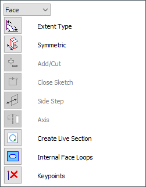
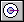
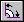

Define the extent of a revolved feature
To define an extrusion or cutout in the ordered environment, do the following:
-
Verify the Extent Step (1) is active on the command bar.

-
Click an extent distance option:
-
One-sided Extent
-
Non-symmetric Extent
-
Symmetric Extent
-
-
Click an extent direction option:
-
Revolve 360 Degrees

-
Finite Extent

-
-
Use the dynamic arrows and the options displayed on the command bar to finish defining the feature extent. You can change the extent options at any time as you construct the feature.
When you are constructing or editing a part in the context of an assembly (you have in-place activated the part), you can use assembly reference planes to define the feature extent. This allows you to edit the feature extent from within the assembly, by editing the reference plane's offset value. Press and hold the Shift key while clicking the assembly reference plane.
How do I
Define an axis of revolutionConstruct a revolved extrusion or cutout
Construct a revolved feature with an existing centerline axis
Learn more
Constructing revolved ordered featuresLook up more details
Revolve commandRevolve command bar
Revolved Cut command
Revolved Cut command bar
Axis of Revolution command